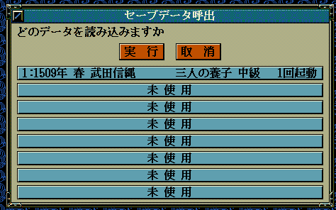

void カスタム::On_セーブデータ読込時(int スロット番号, string セーブファイル名) {
}

void カスタム::On_セーブデータ読込時(int スロット番号, string セーブファイル名) {
デバッグ出力 << "スロット番号:" << スロット番号 << endl;
デバッグ出力 << "セーブファイル名:" << セーブファイル名 << endl;
}
void カスタム::On_セーブデータ読込時(int スロット番号, string セーブファイル名) {
// 何らかの外部テキストを内部変数へと格納する処理
// http://天翔記.jp/?page=nobu_mod_the_snmod_methodref_lua_functions_06
// に類似する処理内容を行うことが多いだろう。
}